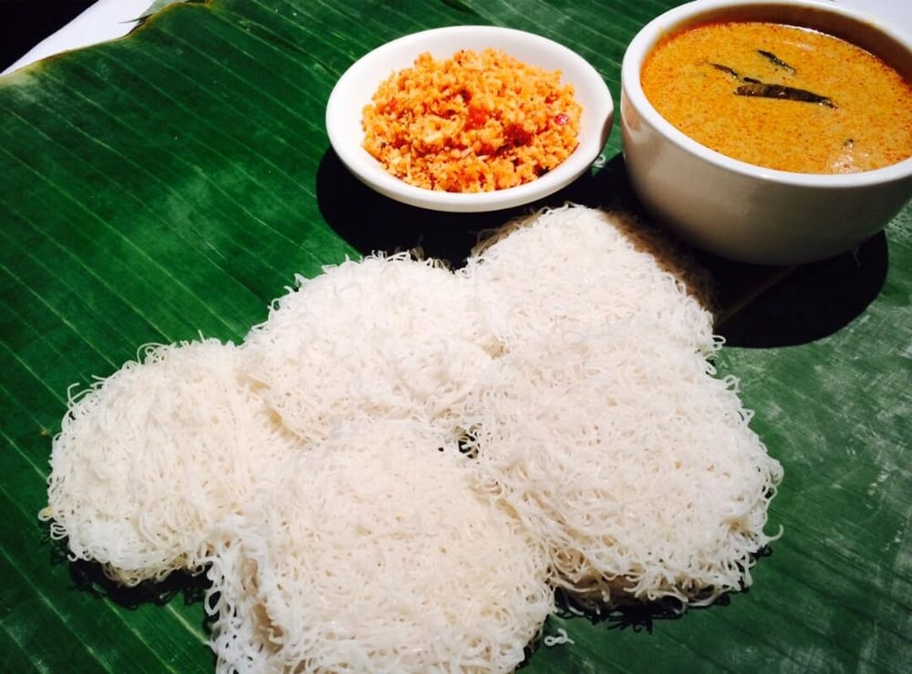

Sri Lankan food is a unique and diverse cuisine that reflects the country's rich history, cultural influences, and geography. The cuisine is centered around rice and coconut and utilizes an array of herbs, spices, vegetables, fruits, fish, and meats to create an explosion of flavors. Sri Lankan cuisine has been influenced by a range of cultures, including South Indian, Portuguese, Dutch, and British, resulting in a fusion of flavors and dishes. The cuisine varies by region, with seafood being prominent in coastal areas, Tamil cuisine sharing similarities with South Indian cuisine, and Kandyan Sinhalese cooking utilizing hill vegetables and fruits. Sri Lankan food is a must-try for any food lover and offers a range of flavor combinations and culinary experiences..
Rice and Curry
Sri Lankan rice and curry is the country's staple dish and is an integral part of Sri Lankan cuisine. The dish typically consists of steamed rice served alongside several curries and accompaniments. The curries are made using an array of ingredients such as vegetables, lentils, fish, and meat, and are flavored with a range of spices and herbs. The dish is traditionally served on a banana leaf, which adds to the overall presentation and flavor. The use of coconut milk and coconut oil is prominent in Sri Lankan cuisine and adds a unique flavor to the curries. Sri Lankan rice and curry is a wholesome and nutritious meal that offers a wide range of flavors and is a must-try for anyone visiting Sri Lanka..
pol sambol
A spicy coconut relish made with grated coconut, chili, onion, and lime juice, often served as a condiment with rice and curry. Pol sambol or thenkai sambal is a traditional Sri Lankan dish made from coconut, mostly used as an accompaniment with rice, string hoppers, hoppers and curries. It is a coconut relish, consisting of freshly grated coconut, shallots, dried whole chilies or chili powder, lime juice, salt and Maldive fish.
String Hoppers
Also known as "idiyappam", this dish is made with steamed rice flour noodles, often served with a spicy coconut-based gravy or a sweet jaggery sauce. Idiyappam is a culinary speciality throughout the Indian states of Tamil Nadu, Kerala, Karnataka and in Sri Lanka. The dish is also, frequently, called noolappam or noolputtu, originating from the Tamil and Malayalam word nool, meaning string or thread. In Mangalore and Udupi it is eaten with Tuluva chicken or fish curry, and a coconut milk dish called rasayana.It is also a common breakfast item in Malaysia & Singapore, where it is called Puttu Mayam, typically served with brown sugar and grated coconut.
Conclusion
Sri Lankan cuisine is a unique blend of herbs, spices, vegetables, fish, and fruits, centered around rice and coconut, with seafood playing a significant role. The country has a history of trade with foreign traders who introduced new food items and cultural influences. The cuisine varies by region, with seafood being prominent in coastal areas, Tamil cuisine sharing similarities with South Indian cuisine, and Kandyan Sinhalese cooking utilizing hill vegetables and fruits. Sri Lankan food offers a range of flavour combinations and is inclusive of non-native ingredients. However, trans-generational knowledge dissemination related to traditional and indigenous foods is now limited due to changing lifestyles, dwindling knowledge holders, and shrinking resources. Overall, Sri Lankan cuisine is a reflection of the country's diverse cultural influences, unique geography, and rich history.